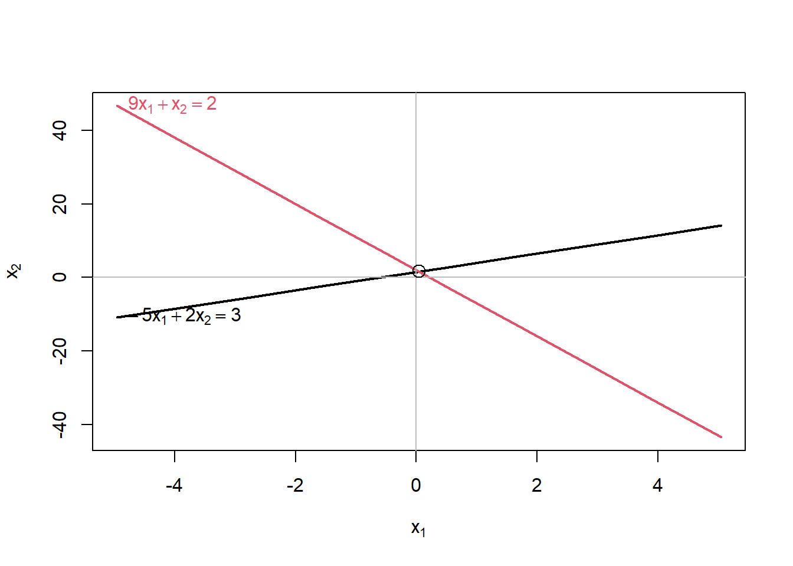

# Parâmetro para ser usado em todos os códigos
knitr::opts_chunk$set(
eval = T,
echo = T,
warning = F,
message = F,
fig.align = "center"
)Neste post vou mostrar como o R pode ser usado na Álgebra Linear, especificamente na resolução de Sistemas Lineares. Vou começar com exercícios simples, que podem ser resolvidos facilmente na mão, para depois avançar para exercícios mais complexos. Para resolvê-los, vou usar os seguintes pacotes:
library(tidyverse)
library(patchwork)
library(matlib)
theme_graph <- function(){
theme(
plot.title = element_text(size = 16),
plot.subtitle = element_text(size = 12),
plot.caption = element_text(face = "italic", size = 9),
axis.text = element_text(size = 9),
axis.title = element_text(face = "italic", size = 9),
strip.background = element_rect(fill = "grey"),
strip.text = element_text(face = "bold"),
legend.title = element_blank(),
legend.position = "bottom",
panel.grid.major = element_line(
rgb(198, 198, 216, maxColorValue = 255),
linetype = "dotted"),
panel.grid.minor = element_line(
rgb(198, 198, 216, maxColorValue = 255),
linetype = "dotted"),
panel.background = element_rect(fill = "#FEFDFF")
)
}O processo de resolução será bem simples, vou (i) escrever a matriz (pois em alguns problemas não será fornecida de maneira direta); (ii) escrever os coeficientes da matriz; (iii) criar variáveis no R com os coeficientes; (iv) testar se o sistema tem solução; (v) aplicar a função para resolvê-lo; (iv) plotar a solução em um gráfico.
Escrevendo a matriz: \[ \begin{bmatrix} -5x & +2y & =3\\ 9x & +y & =2 \end{bmatrix} \]
Escrevendo os coeficientes: \[ \begin{bmatrix} -5 & 2 & = 3\\ 9 & 1 & = 2 \end{bmatrix} \]
Criando as variáveis:
left_side <- matrix(c(-5,9,2,1),
nrow = 2)
right_side <- matrix(c(3,2),
nrow = 2)all.equal(R(left_side), R(cbind(left_side,right_side)))## [1] TRUEsolve(left_side,right_side)## [,1]
## [1,] 0.04347826
## [2,] 1.60869565Os valores 0.0435 e 1.6087 indicam os valores de X e Y que geram a intersecção destas retas. Plotando o gráfico, a solução ficará mais evidente.
matlib::plotEqn(left_side,right_side)## -5*x[1] + 2*x[2] = 3
## 9*x[1] + x[2] = 2
Este gráfico é bastante intuitivo, porém só é aplicável em sistemas com até três variávels.